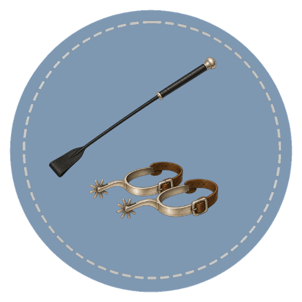

Good riding depends on clear communication between horse and rider. Aids are the signals used to guide movement, balance, speed, and direction. They form the basic language of riding and allow the horse to understand what is being asked.
This course introduces the four natural aids — leg, seat, hands, and voice — and explains how artificial aids support and refine those signals when needed.

Course Curriculum
Each course is split into short lessons that build your knowledge step by step. You learn through pictures, practice, and review activities.
Horse learning made simple for every level. Go at your own pace with clear, visual lessons.
Ready to Start?
These lessons build clear, confident understanding step by step. You learn to spot, describe, and use what you learn around real horses.
Start the Course